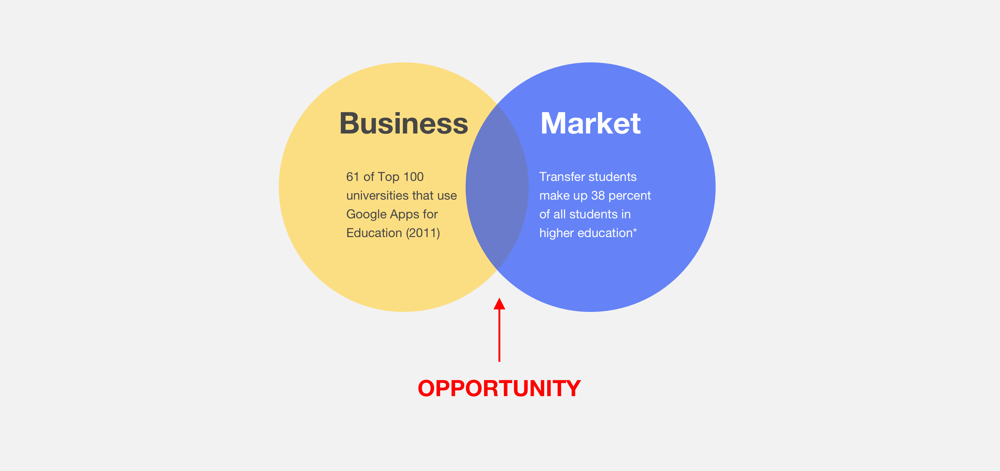
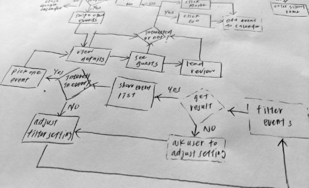
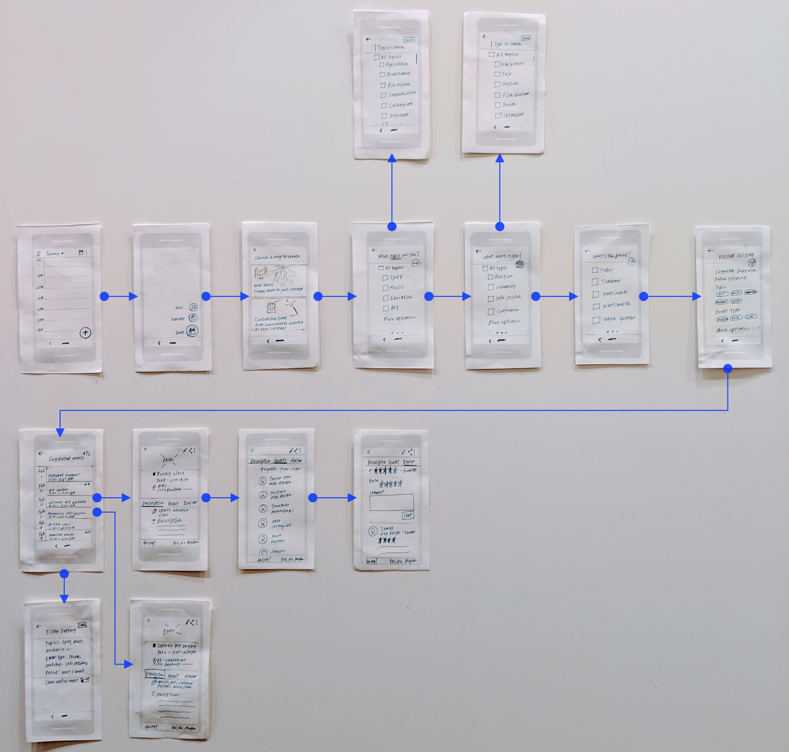

While applying for Google Summer Intern, I was assigned to complete the Google Design Challenge within a week. The prompt is to design an experience for students to discover orientation events and craft a visual system to accommodate different types of events: sports, music, visual arts, social groups, and volunteering events. The design must cover high-fidelity mocks for searching, browsing, and viewing the details for these different events.
To get a better understanding of Google’s design process, I modified Google Design Sprint Process , originally designed to be run by teams, for the team of one (me) to experience how it works in advance.
Design Process Overview
Prior to the user research, I targeted new transfer-hopefuls as the product users since there is a promising market opportunity for Google which is tapping into higher education to extensively build its thought leadership in community colleges.
Market Research
In students events, there are at least three stakeholders involved: students, student organization leaders, student program advisor, and those are the ones I interviewed.
User interviews: I conducted the user research with twelve participants to get a thorough perception of:
Affinity Diagram: Based on the user research, I applied Affinity Diagram to synthesize users’ demographics and their experience of engaging with school events; from searching, signing up, to attending events. The data was utilized to gain users' pain points and outline the user journey map for all stakeholders.
After the “unpack” phase, I sketched out the user flow to generate potential solutions to help new transfer-hopefuls improve their experience of searching school events.
Sketching the user flow
In the Decide stage, I prioritized the project work based on the users behaviors and technology capacity
In the last stage, I created prototypes, conducted two usabilty testings, and validated the design.
Paper Prototype: In this phase, I paper prototyped the first version which focused on the features which help students find the events that fit them easily by integrating with Google Calendar’s powerful scheduling services. 
Paper prototype
Paper Prototype Testing: I carried out the paper prototype testing with eight students. The test covered six tasks, and one post-question. Two main goals for the testing are to:
The task completion rate of the prototype is 66%. Feedback on the paper prototype was mostly positive, though some users offered suggestions for improvement on the design. I analyzed the feedback and iterated the design afterward.
“Everything is now in one place!” - p2
“In this case, I would be excited to learning more about school events” - p3
“The onboarding feature is easy to complete” - p5
Analysis of paper prototype testing
After the iterative process, the high-fidelity prototype was created in Sketch and Invision. It was based on Google’s Materials Design and the final version.
The finalized hi-fi prototye improved students experience with exploring the school event - more customized and efficient- and increase the task completion rate to 92%. Come explore the final interactive prototype now!
Final interactive prototype [Click to explore]
Last but not least, specially shout out to those who were willing to commit their time to participant the interview and testing under such limited timeline.
{kind=link}
{kind=link}
{kind=link}
{kind=link}
{kind=link}
{kind=link}
{kind=link}